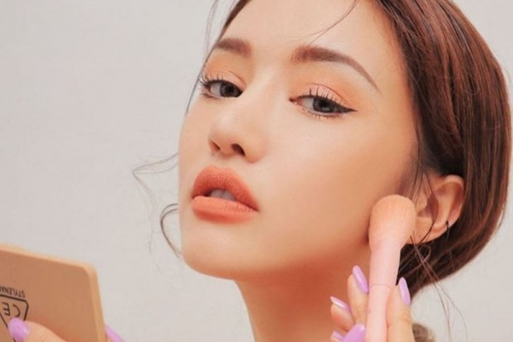

Ira Syafira | Beautynesia
Kamis, 20 May 2021 21:30 WIB
Blush on atau perona pipi merupakan salah satu riasan wajah yang bisa menjadikan penampilanmu tampak lebih segar. Mengaplikasikan blush on bisa membuat area sekitar pipi menjadi lebih merona sehingga seseorang akan terlihat lebih fresh dan awet muda.
Walaupun demikian, kamu harus memahami tips dan trik dalam memilih blush on yang sesuai dengan warna kulitmu. Pasalnya, hal ini penting diperhatikan agar hasil riasanmu tetap terlihat natural. Jika kamu salah dalam memilih warna, maka bisa-bisa rona wajahmu menjadi kusam. Nah, berikut Beautynesia telah merangkum tips yang bisa kamu perhatikan agar tidak salah lagi dalam memilih blush on.
1. Kulit Putih

Untuk kamu yang memiliki kulit putih, sebetulnya tidak perlu khawatir dalam memilih warna blush on. Warna kulitmu cenderung cocok dengan segala jenis warna blush on yang ada.
Namun, kamu disarankan memilih blush on yang memiliki varian warna lembut seperti soft pink, peach, atau light coral. Pilihan warna blush on tersebut akan membuat tampilan kulit cerahmu terlihat lebih menyegarkan dan memberi kesan yang manis. Cara pengaplikasiannya bisa dengan brush tipis-tipis agar terlihat lebih natural di kulit.
Baca Selengkapnya